五个方向，每个方向三个核心页面（首页 ／ 分区排行 ／ 看懂视频），全部按 1440 × 900 桌面视口出图。 文案、命令名、数据都取自项目现状，可以直接对着改代码。
结论先行：主干走 A（暗色三栏 · 密度优先），把 C 的「参数常驻右栏」和 B 的「先搜后浏览」挑进来当增强。
理由：整站已经挂死在 Element Plus 暗色变量上，翻明色要重排 style.css 全部 token 加重写 20 多个组件的观感，收益却只是"好看"；而 106 条命令找不到、结果只剩一条、历史往下挤这三件事是结构问题，A 用最小改动就解决了。
D（终端）是唯一可能比 A 更省事的方向 —— 它不需要新组件，索引是纯文本、结果是一张表，改动量甚至小于 A。如果你本来就活在终端里，D 值得认真考虑；代价是它"看起来不像个图形界面"。
C 的宋体标题在纯工具场景里气质偏"内容站"，但「参数不跳页」这个主张比现在"选命令 → 跳到一个大表单"体验好，值得单独摘出来做。E（粗野主义）不建议做主干：2px 黑边 + 硬阴影在演示时很抓人，日常高频使用会累。
只为对比：导航在哪、参数在哪、结果怎么排。文案完全一致。
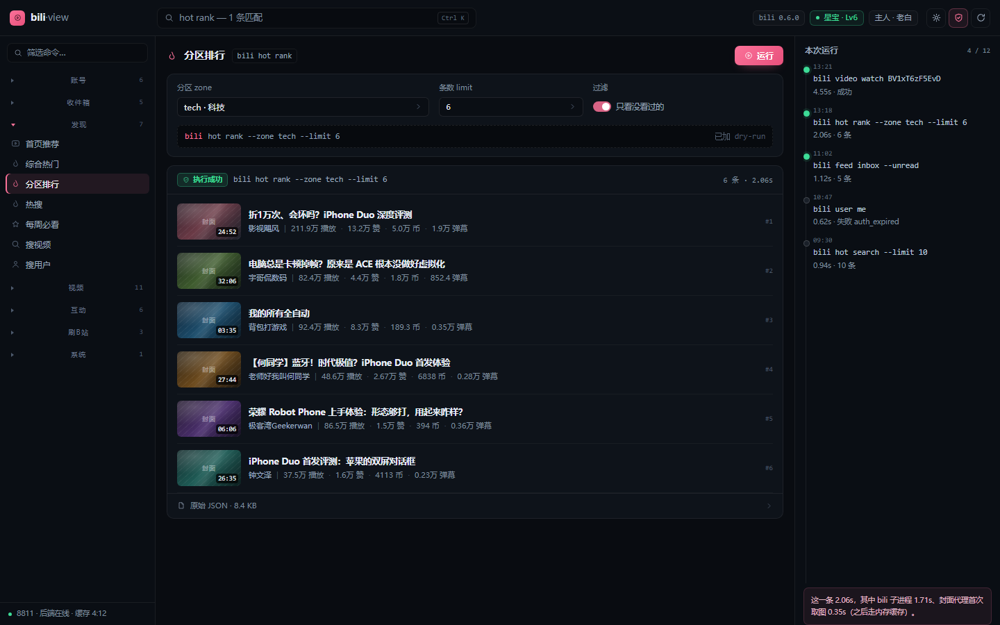
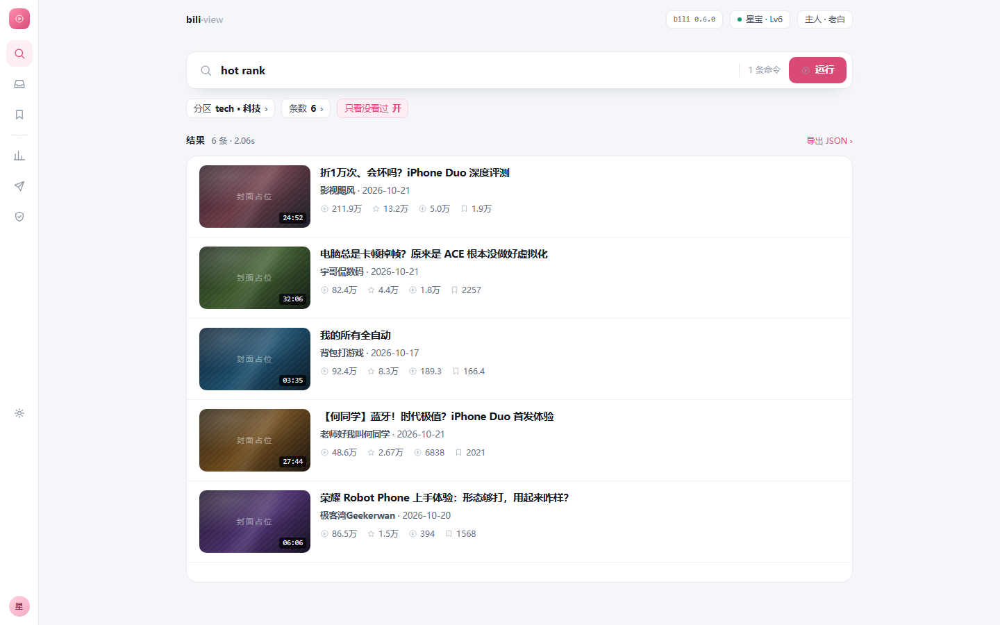
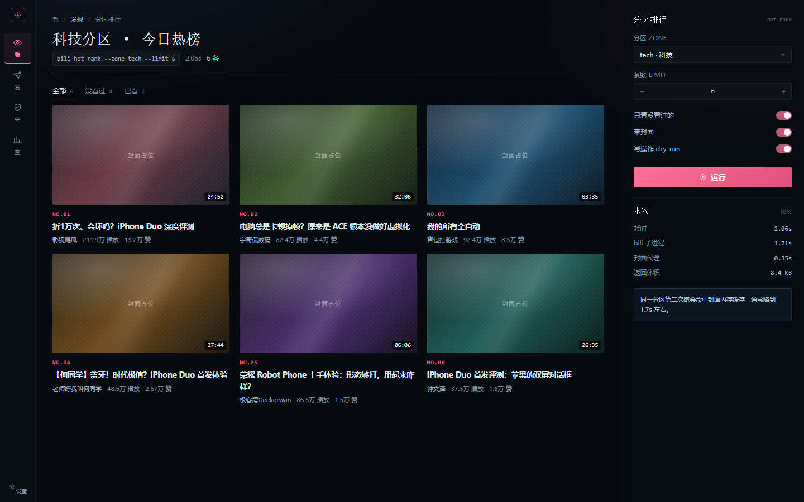
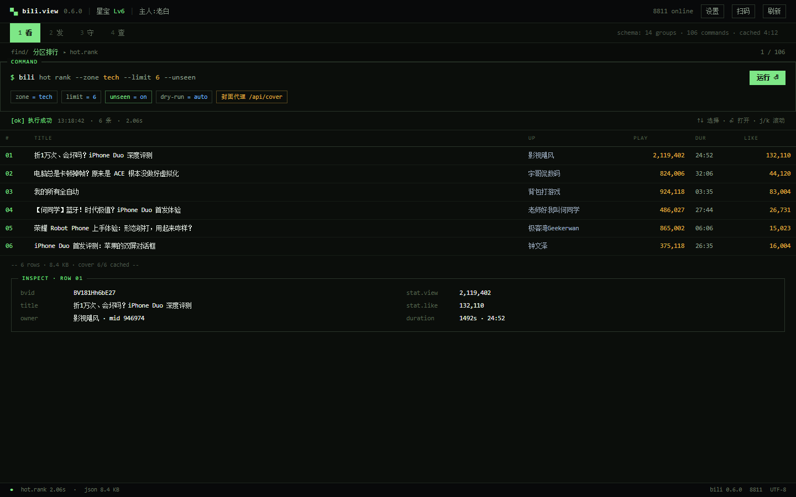
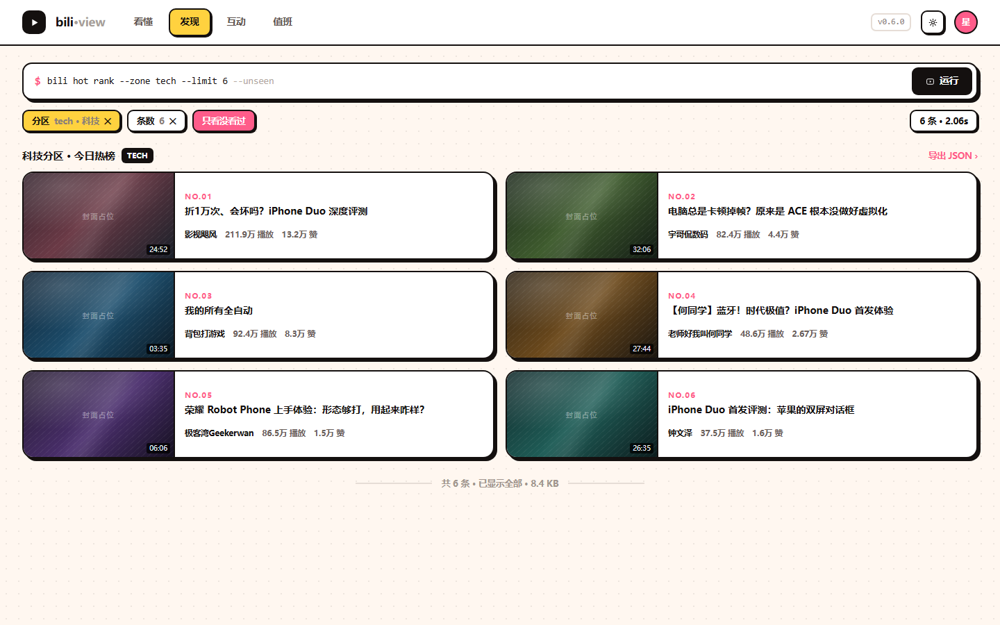
| 方向 | 明暗 | 结构主张 | 字体角色 | 主色策略 | 适合 / 代价 |
|---|---|---|---|---|---|
| A 控制台 | 暗色 #090C11 |
三栏：命令导航（分组折叠）｜工作区｜运行记录时间线 | 黑体 12.5 为主，命令与数据用等宽 | 只留一种粉，砍掉紫蓝渐变 | 贴合现状，改动最小；密度高、久看不累。代价是"亮点"少 |
| B 阅读器 | 明色 #F4F6F9 |
56px 图标条 + 单列 960 阅读流，先搜后浏览 | 黑体 14.5/1.6，正文放大、行距放松 | 粉压深到 #D94A76（白字才够对比度） | 最亲和，适合"看内容"；翻明色要重排全部 token 与组件，成本最高 |
| C 工作台 | 深冷 #070A0F |
64px 任务条（看/发/守/查）+ 参数面板常驻右栏，不跳页 | 标题宋体、正文黑体 —— 杂志感 | 粉只做强调点（序号、下划线、开关） | 气质最好、参数流最顺；但宋体只能做标题，气场偏内容站 |
| D 终端 | 近黑绿 #0B0E0B |
顶栏 + 数字 tab + 文本流命令索引 + 结果表格 + 底部状态栏 | 全站等宽（Consolas），没有第二套字 | 单色荧光绿 + 琥珀；B站粉只做几个点 | 不需要新组件，改动比 A 更小；密度最高。代价是"不像图形界面"，新用户找不到东西 |
| E 粗野主义 | 暖白 + 点阵 #FFF7F0 |
横向导航 + 大 banner + 等高栅格（无侧栏） | 超粗黑体（800）做标题，字号拉到 29–31 | 粉 / 青 / 黄三色满铺，撞色 | 演示、截图、给人看最抓眼；日常高频用视觉噪音大，不适合当主干 |
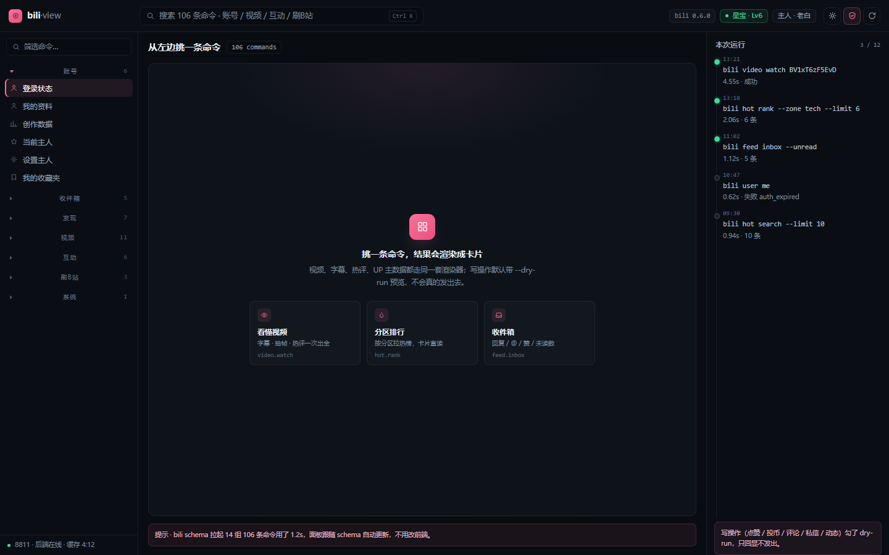
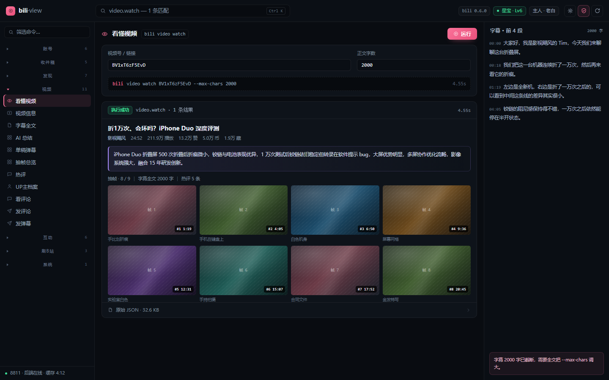
Ctrl K 唤起；空态给三张常用卡，不用翻 106 条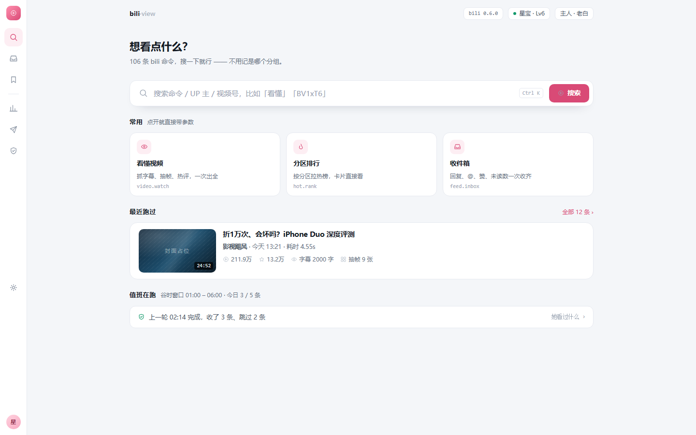
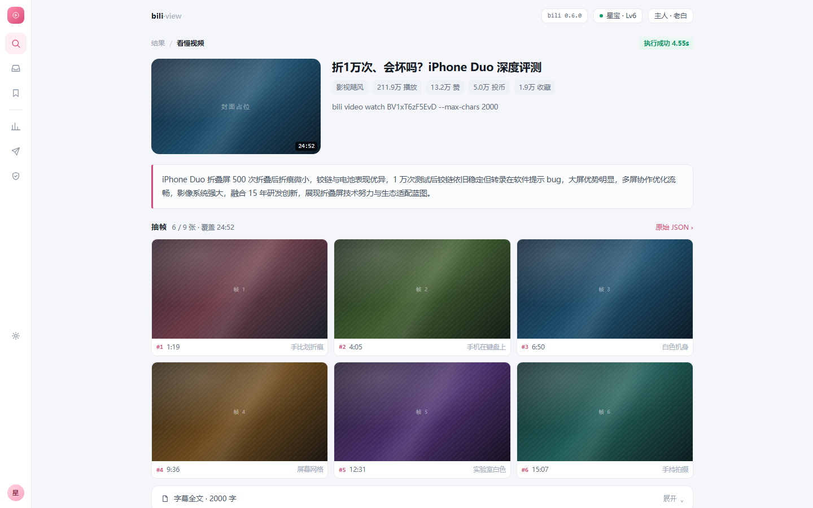
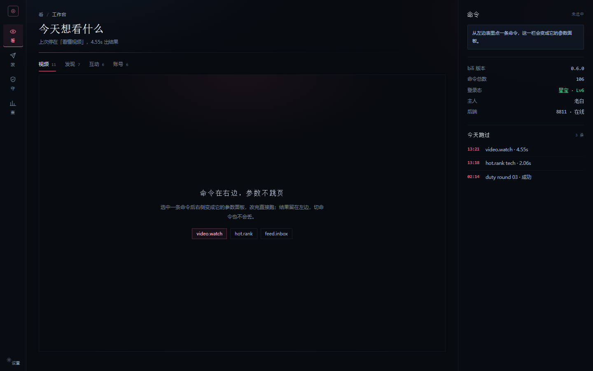
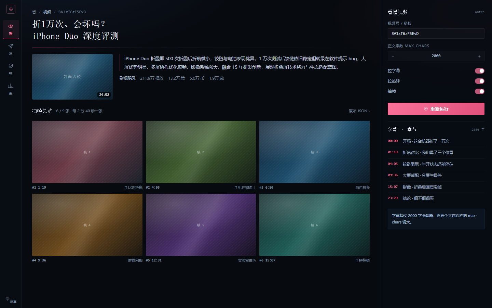
account/ 登录状态 · 我的资料 · … 每组一行# / TITLE / UP / PLAY / DUR / LIKE，数字右对齐带千分位；选中行下方 INSPECT 显示原始字段[ok] / err 而不是彩色徽章；底部固定状态栏写版本 / 端口 / 编码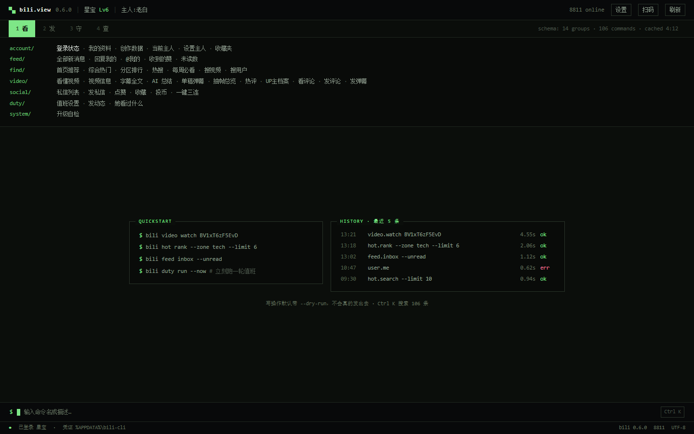
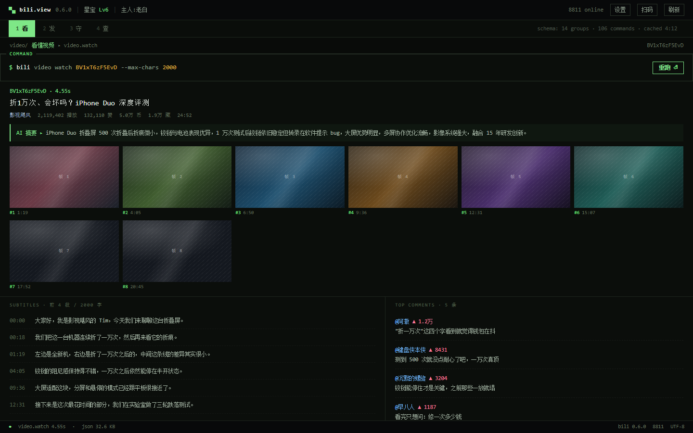
4px 4px 0 #14100F（大块用 6px），零模糊 —— 这是整套风格的地基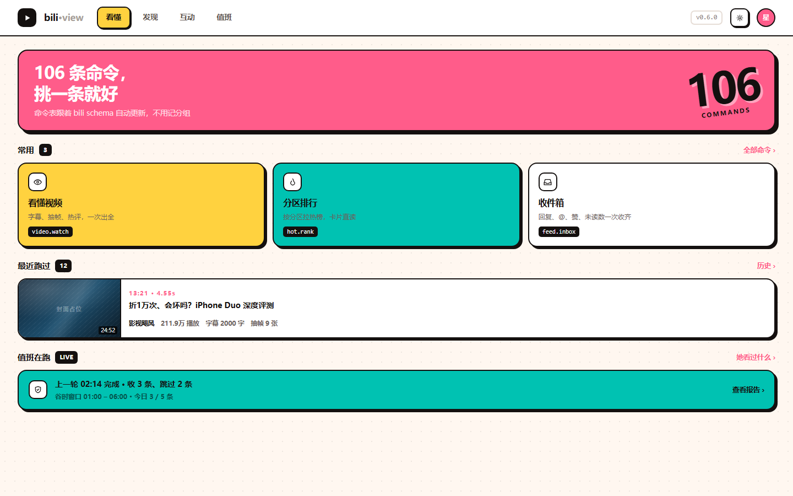
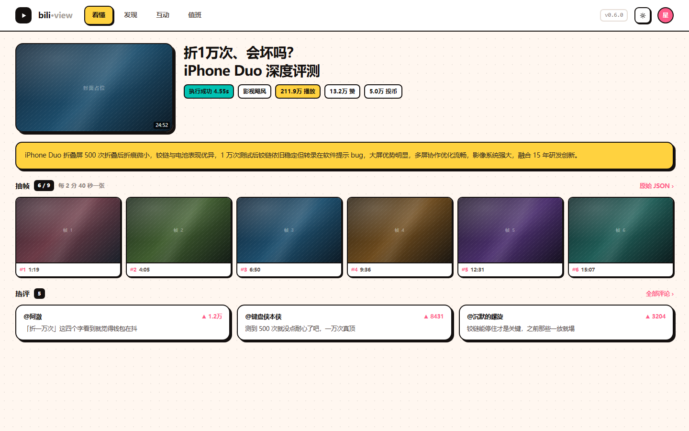
| 问题 | 为什么是问题 | 五个方向各自的改法 |
|---|---|---|
| 106 条命令平铺 + 搜索兜底 | 用户想的是"我要看这条视频"，界面给的是"你要找 video.watch 这个命令"。侧栏 14 组全展开，滚动条比内容还长 | A 分组默认折叠｜B 不放树，先搜后浏览｜C 压成 4 个动词｜D 文本流索引，一组一行｜E 横导航 + 大搜索 |
| 一次只看得到一条结果 | results 是数组但视觉上是纵向堆叠，第二条要往下滚，回头找上一条得靠记忆 |
A 右栏时间线｜B 单列阅读流｜C 结果留在左侧｜D HISTORY 文本流 + 表格一次铺完｜E 等高栅格一屏 6 条 |
| 主色泛滥（粉 / 紫 / 蓝三套渐变） | B站粉本来是品牌色，被紫蓝渐变稀释成"通用 AI 风"；重点按钮和普通标签抢注意力 | A/B/C 收敛成单一粉｜D 换成荧光绿，粉只做点｜E 三色撞但不渐变 |
| 表单感压过内容感 | 看懂视频页里 9 张抽帧和 2000 字字幕是主角，但视觉权重被上面的表单卡抢走 | A 抽帧铺满中栏｜B 图文优先 + 表单收成 chip｜C 抽帧 3 列 + 章节挪右栏｜D 结果全宽铺开｜E banner + 满色卡 |
style.css 里把 --grad-brand 的紫蓝两段砍掉，主色只留 #fb7299 → #e8507c；顶栏 64 → 52。改动只在 token 层，组件不用动。SidebarNav.vue 加折叠（defaultOpen 只留一组），.el-menu-item 行高 34 → 29。VideoCard.vue 加一个 dense 变体（92×52 缩略 + 单行 meta），排行 / 收件箱这类"多条"场景走 dense，单条详情仍用大卡。App.vue 的 .results 拆成「主区最新一条 + 右栏历史时间线」；这一步动 App.vue 布局，建议先把前三刀合了再上。el-table、配色只改 token。实际工作量大概是 A 的 60%，但顶部 tab 和键盘快捷键要新写。bili schema 自动同步这套机制 —— 它是这个项目最值钱的设计，五套稿子都保留了。rgba(255,255,255,.09) 只有约 1.4:1，达不到 WCAG 1.4.11 对非文本控件要求的 3:1；提到 3:1 要把描边亮度推到 #5b636d 级别，暗色氛围会明显变"硬"。#7D8B9C 实测约 5.3:1 达标，但如果再往下调淡（很多控制台会调到 3:1 左右）就不合格了 —— 稿子里已经是达标值，改代码时别顺手调淡。--ink3 #63725F 在 #0B0E0B 上只有约 4.1:1，低于 AA。终端风天然要"暗辅助字"，这个值已经比大多数真实终端高；如果要严格达标，得提到 #778672 左右，荧光感会淡一点。